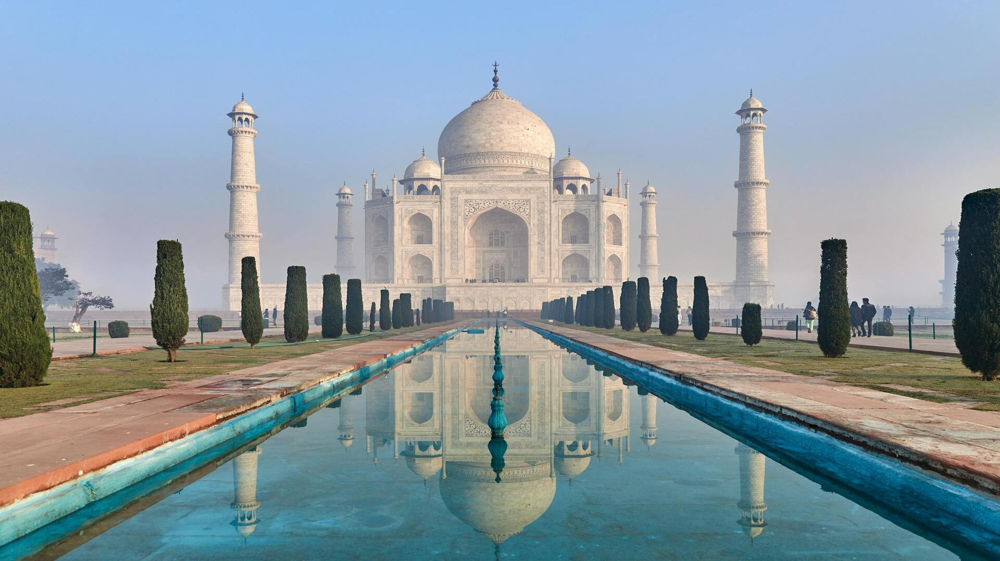
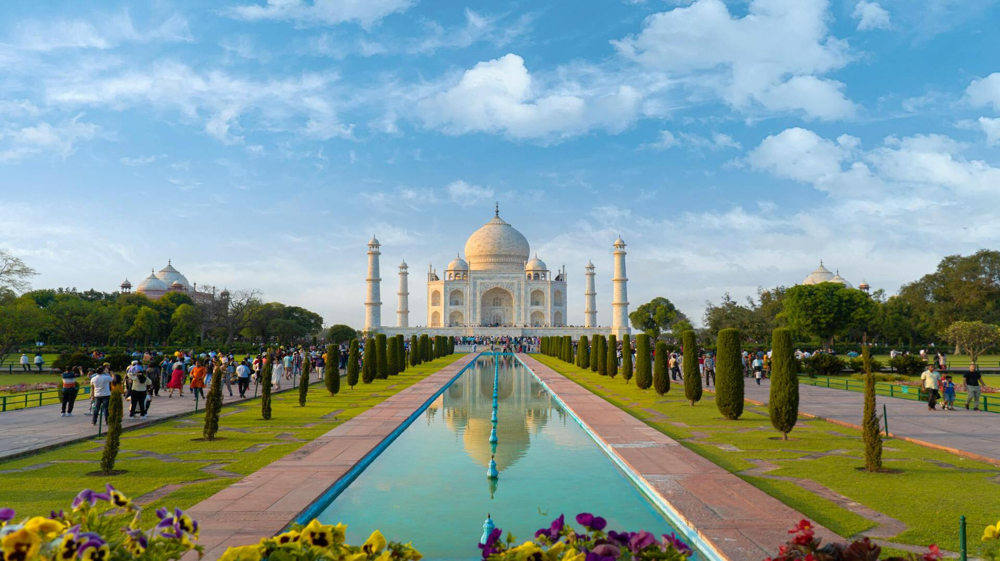
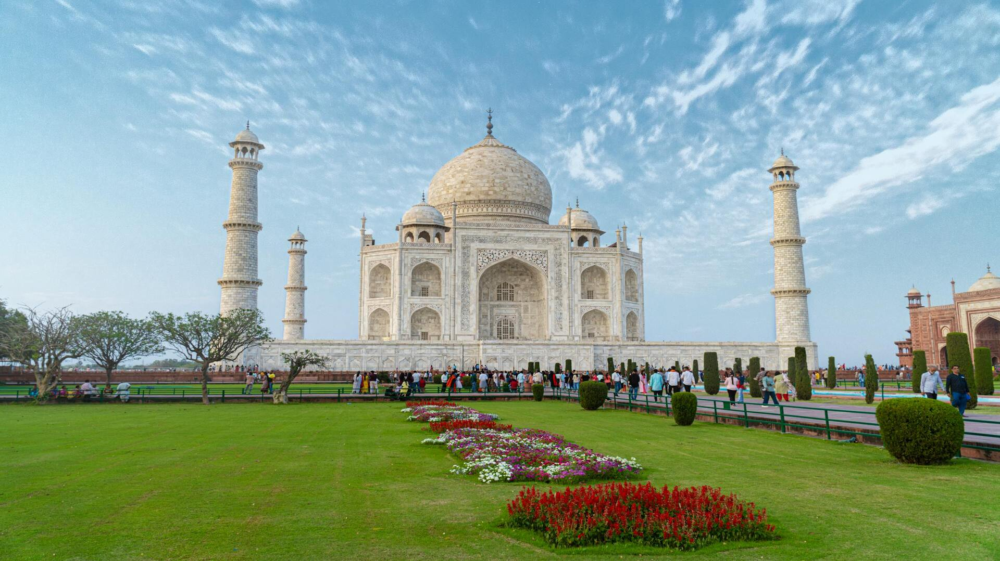

Tadž Mahalas



Tadž Mahalas, esantis Agros mieste Indijoje, dažnai laikomas meilės simboliu. Pastatytas 1632 m. šacho Džahano kaip paminklas žmonai Mumtaz Mahal, mauzoliejus buvo statomas daugiau nei 20 metų. Jo simetriškas dizainas, sodai ir atspindintis baseinas sukuria harmoningą atmosferą. Detalus marmuro inkrustavimas, puoštas pusbrangiais akmenimis, demonstruoja Mogolų imperijos menininkų meistriškumą. Tadž Mahalas yra ne tik UNESCO pasaulio paveldo objektas, bet ir vienas fotografiškiausių paminklų pasaulyje.